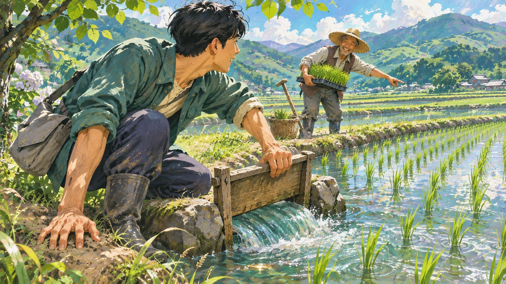

01 함께 정하는 사람
혼자 떠나, 함께 정한 길
낯선 사람의 사정부터 이해하려 했습니다.
홀로 아시아를 배낭여행하다 보면 처음 만난 여행자들과 길을 함께할 때가 있었습니다. 이동과 숙박을 함께 정하고 예상하지 못한 문제도 같이 풀었습니다.
언어와 배경이 다른 만큼 상대가 낯선 사람을 경계하는 마음부터 이해하려 했습니다. 서로 원하는 것을 확인하며 다음 일정을 정했습니다. 낯선 사람과 함께 움직이는 일은 그 사정을 이해하는 데서 시작한다고 생각합니다.
02 다시 배우는 사람
모르는 일 앞에서
꼼꼼함이 주저함에 머물지 않도록.
부동산을 전공하고 오래 공부했지만 실무에서는 다시 배울 일이 많았습니다. 재개발 사업의 비례율과 조합원 부담금도 엑셀로 계산 구조를 다시 세워 확인했습니다.
꼼꼼하게 확인하는 만큼 낯선 업무를 먼저 맡겠다고 말하기를 주저한 적도 있습니다. 지금은 모르는 내용과 확인 기한을 함께 밝히고 할 수 있는 범위를 제안합니다.
과장하지 않으려다 제가 맡았던 일이 충분히 전해지지 않은 적도 있습니다. 요즘은 제가 한 일과 역할을 자료로 남겨 동료에게 전하려고 합니다.

03 필요한 일을 돕는 사람
논에 물을 대던 시간
공부와 가족의 일을 함께 이어갔습니다.
2025년 겨울부터는 AI 도구와 실무 관련 자격 공부를 병행하며 아버지의 농사일을 도왔습니다. 모내기와 농번기 일손 지원, 구거·농수로를 통한 논 물대기에 참여했습니다. 책상에서 배우는 일과 가족에게 필요한 일을 함께 이어간 시간이었습니다. 해야 할 일을 꾸준히 해 나가려는 마음은 지금도 같습니다.
04 직접 구성하는 사람
제 일에 맞는 도구
자료를 찾고 쓰고 검토하는 순서를 만듭니다.
반복되는 자료 정리와 문서 검토를 제 작업에 맞게 바꾸고 싶었습니다. 필요한 기능을 정하고 AI에 구현을 지시한 뒤 계획·자료 정리·문서 작성·검수를 나누어 맡는 에이전트를 구성했습니다.
온톨로지로 법령과 학습자료의 개념·출처·관계를 연결해 근거를 찾아 대조합니다. 문장이 자연스러워도 맡은 일의 범위가 달라질 수 있어 원자료와 다시 맞춰 봅니다. 지금도 개인 자료를 정리하고 문서를 쓰고 검토하는 데 활용합니다.